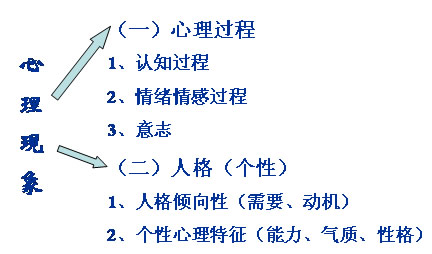

00:00
基本内容
1.心理学一般可分为：基础心理学和应用心理学。
2.基础心理学着重于理论体系的建立和基本规律的探讨。
3.应用心理学则将心理学的理论运用于社会实践活动，提高人们的生活质量和工作质量。
4.心理卫生、心理咨询和心理治疗及人力资源管理是应用心理学的一个重要领域，它服务于保障人们的心理健康。
5．普通心理学是以正常的成人的心理活动为对象，阐述心理活动最基本的规律。
第一单元 基础心理学的研究对象及内容
一、心理学概述
1.人的心理活动中，意识是心理发展的最高层次，只有人才有意识。
2.心理学是研究心理现象发生、发展和活动规律的科学。
3.心理现象可以从它的发生、发展的维度上进行研究，形成了动物心理学和比较心理学。
4.从人类心理的发生、发展的维度上进行研究，形成了发展心理学和儿童心理学。
5.基础心理学的任务，是把上述研究成果集中起来加以概括。总结出人心理活动的一般规律。
6.基础心理学是以正常成人的心理现象为研究对象，总结心理活动最普遍、最一般规律的心理学的基础学科。
17:35
二、普通心理学的内容
（一）认知
1.人认识外界事物的过程。
2.包括：感觉、知觉、记忆、表象、、思维言语、想象等。
（二）需要和动机
1.需要是人体内部的一种不平衡状态。
2.动机是推动人从事某种活动，并朝向一定目标前进的内部动力。
（三）情绪、情感和意志
1.对外界事物的态度和内心体验，是对客观事物与主体需要之间关系的反映。
2.意志，是人的思维决策见之于行动的心理过程。
（四）能力、气质、性格
1.能力是完成活动必须具备的心理条件
2.气质是心理活动动力特征的总和
3.性格是表现在事物的态度和习惯化的行为方式上的人格特征。
第二单元 人的心理的本质
一、心理是脑的机能
27:17
2.心理现象是随着神经系统的产生而出现的。没有神经系统的动物，没有心理。有了神经系统的动物有了心理。
3.无脊椎动物（蚯蚓），只有一条神经链，感觉。
4.脊椎动物（鸽子、草蛇），脊髓和大脑，知觉。
5.灵长类动物（猴子、猩猩），发达大脑，思维。
6.哺乳动物（人类），高度发达大脑，意识。

二、心理是客观现实的反映
1.心理现象是客观事物作用于人的感觉器官，通过大脑活动产生的。客观现实是心理的源泉和内容。
31:41
2.心理也是社会的产物，离开人类社会，有人类大脑，也不会产生人类的心理。
3.心理的反映是能动的反映。心理是以活动的形式存在的。
4.心理支配人的行为活动，又通过行为活动表现出来。